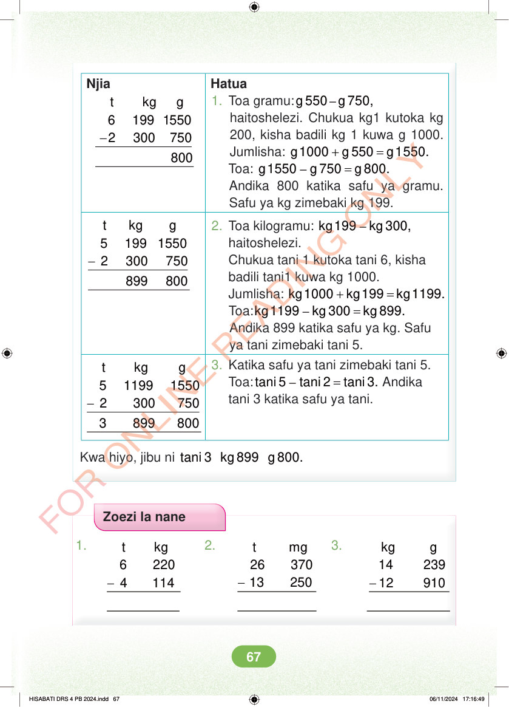

<!DOCTYPE html>
<html lang="sw-TZ"><head><meta charset="utf-8"><meta name="viewport" content="width=device-width,initial-scale=1">
<title>Hisabati: Kitabu cha Mwanafunzi Darasa la Nne</title>
<meta name="title-id" content="pg073_sec001"><meta name="page-section-id" content="76">
<link href="./content/tailwind_output.css" rel="stylesheet"><link href="./assets/libs/fontawesome/css/all.min.css" rel="stylesheet"><link href="./assets/fonts.css" rel="stylesheet">
<style>body{margin:0;background:#eef1ed}main{width:100%;display:flex;justify-content:center;padding:1rem 1rem 5rem;box-sizing:border-box}#content{width:100%;display:flex;justify-content:center}.pdf-page{position:relative;width:min(calc(100vw - 2rem),56rem);aspect-ratio:540.8980102539062/750.6610107421875;background:white;box-shadow:0 4px 24px #0002;overflow:hidden}.pdf-page img{position:absolute;inset:0;width:100%;height:100%;object-fit:fill}</style>
</head><body><main><h1 class="sr-only" id="page-heading">Ukurasa wa 73</h1><div id="content" class="opacity-0"><section role="article" data-section-type="pdf_accessible_page" data-section-id="pg073_sec001" aria-labelledby="page-heading" class="pdf-page"><p class="sr-only" data-id="pg073_gp001_tx001">Njia Hatua 1. Toa gramu: – g 550 g 750, haitoshelezi. Chukua kg1 kutoka kg - t kg g 6 199 1550 2 300 750 200, kisha badili kg 1 kuwa g 1000. Jumlisha: + = g 1000 g 550 g 1 550. Toa: – = g 1550 g 750 g 800. Andika 800 katika safu ya gramu. Safu ya kg zimebaki kg 199. - t kg g 5 199 1550 2 300 750 899 800 2. Toa kilogramu: – kg 199 kg 300, haitoshelezi. Chukua tani 1 kutoka tani 6, kisha badili tani1 kuwa kg 1000. Jumlisha: + = kg 1000 kg 199 kg 1199. Toa: – = kg 1 199 kg 300 kg 899. Andika 899 katika safu ya kg. Safu ya tani zimebaki tani 5. 3. Katika safu ya tani zimebaki tani 5. Toa: – = tani 5 tani 2 tani 3. Andika tani 3 katika safu ya tani. - t kg g 5 1199 1550 2 300 750 3 899 800 Kwa hiyo, jibu ni tani 3 kg 899 g 800. Zoezi la nane 1. 2. 3. - - - t mg 26 370 13 250 t kg 6 220 4 114 kg g 14 239 12 910 HISABATI DRS 4 PB 2024.indd 67 HISABATI DRS 4 PB 2024.indd 67 06/11/2024 17:16:49 06/11/2024 17:16:49</p></section></div></main><div class="relative z-50" id="interface-container"></div><div class="relative z-50" id="nav-container"></div><script src="./assets/offline-preloader.js?v=audiofix-20260824-1"></script><script src="./assets/scorm.js"></script><script src="./assets/base.bundle.local.js?v=audiofix-20260824-1"></script></body></html>